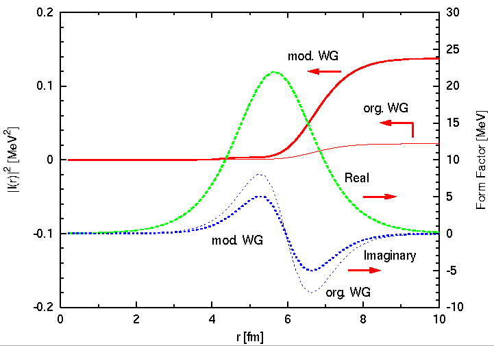

set term postscript eps enhanced color
set output "overlap.eps"
set size 0.8,0.8
set origin 0.1,0.1
set xlabel "r [fm]"
set xrange [ 0 : 10]
set xtics 0,2
set mxtic 2
set ylabel "|I(r)|^2 [MeV^2]"
set yrange [ -0.2 : 0.2]
set ytic -0.2,0.1
set mytic 5
set y2label "Form Factor [MeV]"
set y2range [-10:30]
set y2tic -10,5
set my2tic 5
set key left top
set linestyle 1 lt 1 lw 3
set linestyle 2 lt 1 lw 1
set linestyle 3 lt 2 lw 3
set linestyle 4 lt 3 lw 3
set linestyle 5 lt 2 lw 1
set linestyle 6 lt 3 lw 1
set label "Real" at 7.5, -0.025
set label "Imaginary" at 8.0, -0.13
set arrow to 8.8,-0.05 from 8.0,-0.05 linestyle 1
set arrow to 8.4,-0.15 from 7.6,-0.15 linestyle 1
set arrow to 6.6, 0.12 from 7.4, 0.12 linestyle 1
set arrow to 8.5, 0.05 from 9.3, 0.05 linestyle 1
set arrow to 9.3, 0.03 from 9.3, 0.05 nohead linestyle 1
set label "org. WG" at 7.0, -0.18
set label "mod. WG" at 4.0, -0.11
set label "org. WG" at 8.0, 0.07
set label "mod. WG" at 6.0, 0.14
plot "overlap.dat" ind 0:0 u 1:8 axes x1y1 noti with lines linestyle 1,\
"overlap.dat" ind 1:1 u 1:8 axes x1y1 noti with lines linestyle 2,\
"overlap.dat" ind 0:0 u 1:6 axes x1y2 noti with lines linestyle 3,\
"overlap.dat" ind 0:0 u 1:7 axes x1y2 noti with lines linestyle 4,\
"overlap.dat" ind 1:1 u 1:6 axes x1y2 noti with lines linestyle 5,\
"overlap.dat" ind 1:1 u 1:7 axes x1y2 noti with lines linestyle 6
pause -1
